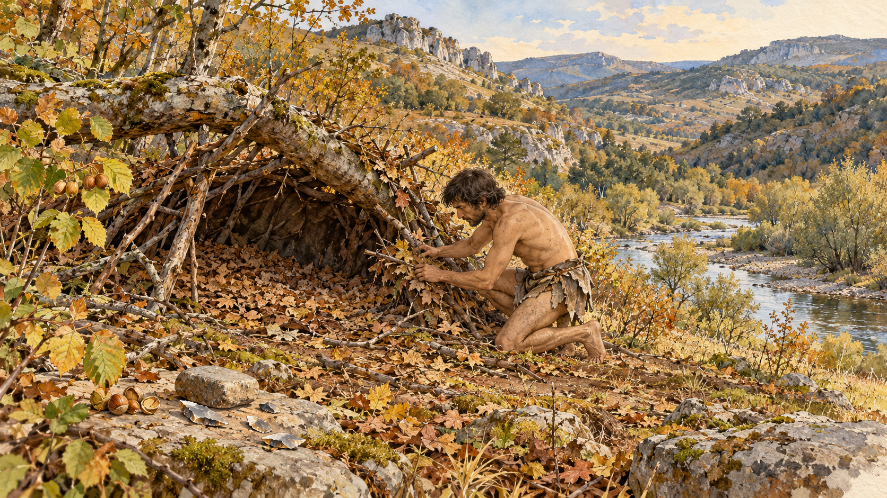

Illustration Continuity
Approved character and style
The user selected the watercolour-and-ink Day 1 image on 1 October 2026 and approved the protagonist’s appearance. Use _Artwork/survival/day-01.png as the primary visual reference in every later Survival scene. Do not redesign him from a text description alone.

Preserve his recognisable facial profile, nose and brow, dark wavy ear-length hair, short dark beard/stubble, skin tone and lean sinewy build. His apparent age in this reference is about thirty; the ageless premise does not mean an artificial young face. Retain ordinary human proportions. Use smooth transparent watercolour for skin and selective fine ink around contours; avoid dense hatching, repeated dots or etched grooves that can read as scars or patterned skin.
The approved style combines fine brown ink with luminous watercolour, warm paper texture, restrained earth colours and softly dissolved margins. Keep a wide approximately 16:9 composition and a readable action. Facial views, light and viewpoint can vary; identity remains stable. Avoid switching to photography, oil painting, engraving or fantasy effects.
Match a specific moment in the day
Read the entire day’s narrative and its frontmatter, then check the preceding day’s First Month Ledger state. Select one actual action. Do not illustrate every outcome as a montage or equip the morning traveller with objects he only makes that afternoon.
Define the moment, allowed objects, forbidden future objects, clothing, unfinished processes and weather before generation. A construction can be shown in progress without claiming a functioning capability. Scenes should distinguish a failed test from a successful one.
Use the original approved Day 1 image for character and style in new scenes. A separate established equipment plate may additionally supply object geometry only when needed; record that limited role and do not import its layout, lettering or cutaway into the narrative. Describe the current camp and objects in the day-specific brief, using the ledger and narrative to establish their state. Do not pass the preceding day’s illustration forward as a reference. Keep object descriptions concrete about material, scale, unfinished work and permitted use.
First ten scenes
| Day | Opening scene | Continuity constraints |
|---|---|---|
| 1 | Building the provisional debris shelter | Rough bark waist panels, simple flakes, hazelnuts; no fire |
| 2 | Cutting the fireboard notch | Unhafted flake and prepared bow-drill parts; no ember, vessel or spear |
| 3 | Transferring the first tiny flame from tinder | Bow drill set aside; fire outside the dry shelter; no water vessel or animal products |
| 4 | Inspecting and emptying the leaking bark vessel | Small folded birch-bark tray, plain wooden spear, limited bark shoulder screen; no boil |
| 5 | Checking a later batch after the vessel repair | Small reinforced tray and hot stones, surface-wide boiling; wooden handling sticks and digging stick |
| 6 | Adjusting the first squirrel pelt on the frame | One small pelt, tiny cleaned bones and unprocessed tendon; no needle, awl, made sinew thread, bags or stored meat |
| 7 | Testing a tiny bone awl on supported scrap hide | A short sinew lot and broken eye attempt; no usable eyed needle or case |
| 8 | Adjusting the first small tool-case seam | Squirrel rawhide folded into a palm-sized case, pre-pierced holes and hand-guided bark line; no usable needle |
| 9 | Adjusting supports on the juvenile-rabbit panel | Small clean panel reserved for tomorrow’s carrier; no finished sling or skin garment |
| 10 | Testing the carrying cradle with a modest blunt load | Rabbit rawhide cradle, separate plant-cord strap and a few small stones; load below one kilogram, no skin garment |
The hearth is outside the illustrated framing on Days 5–10. Their absence from the picture does not remove them from the narrative. A scene need not show the whole camp’s inventory.
Scenes for Days 11–15
| Day | Selected moment | Continuity constraints |
|---|---|---|
| 11 | Forming the small pinch vessel at the uphill work spot | Damp clay and comparison strips; no fired vessel or new fur clothing |
| 12 | Inspecting the polished intact needle eye before threading | Small bone needle and pre-pierced scrap; no thread connection or oversized awl |
| 13 | The brief unsuccessful spear-fishing trial in river shallows | Stable ankle-deep footing, continuous wooden point, no catch; unfinished fur pad remains at camp |
| 14 | Spreading fresh dry litter over the shelter bed | Low interior viewpoint, small fitted pelvic pad over remaining bark coverage; no indoor fire |
| 15 | Watching the supervised firing trial burn down at dusk | Same broad open pinch cup on a visible stone support in the separate cleared outside firing place; pot stays hot, untested and in place |
Weather follows the current entries: cool autumn conditions, a light frost on the upper slope on Day 13, and damp sheltered ground. Do not infer heavy snow or river ice from the older filenames. Scene descriptions follow the revised page bodies and ledger, including no crayfish meal on Day 11 and no fish catch on Day 13.
Scenes for Days 16–20
| Day | Selected moment | Continuity constraints |
|---|---|---|
| 16 | Extracting nettle-fibre ribbons at the downstream rinsing place | Modest fibre yield and separate woody cores; camp furniture remains above the river, cracked pot is not cookware |
| 17 | Twisting a measured fibre portion into light line | Fine hand-made cord with remaining fibre separate; no heavy rope, basket, billet or finished biface |
| 18 | Inspecting the old antler fragment on the upstream excursion | Weathered red-deer fragment away from an active kill; no fresh carcass, hunt or prepared billet yet |
| 19 | Inspecting the retained rough biface beside an ordinary flake | Asymmetrical unhafted tool and broken trial blank; unused percussors and unfinished basket outside the crop |
| 20 | Testing the small completed willow basket with a blunt load | Modest handmade carrier with two small rounded stones; later cage and adhesive work outside this moment |
Days 16–20 retain the small fitted pelvic fur pad over bark waist coverage and the limited single-shoulder bark screen. They do not acquire a large hide or full fur garment. Day 16 uses the downstream rinsing place; Day 18 shows the upstream route. Neither moves the shelter or hearths from the drained camp terrace. Close craft views omit fixed features that are outside the frame.
The first pot remains a rejected, leaking non-food specimen after Day 16. The Day 20 fishing cage is an unfinished land-based prototype in the text, and is not shown before its construction. Cord, basket, antler and biface states follow the selected moment rather than all end-of-day possessions.
Scenes for Days 21–28
| Day | Selected moment | Continuity constraints |
|---|---|---|
| 21 | Checking the first wooden whorl’s fit and balance | One small wooden disk and shaft; unthreaded before the fibre trial, no ceramic success inferred |
| 22 | Removing the single small fish through the opened rear access of the willow cage | Intact cylinder and inward entrance funnel match the equipment plate; untied rear cap beside it, one small catch |
| 23 | Inspecting the repaired little squirrel-hide pouch | Tiny mouse-skin edge patch; the fox pelt is still drying elsewhere, not worn |
| 24 | Adjusting the narrow fox shoulder panel’s ties | Limited coverage over one shoulder; no whole hide, coat or replacement of the older waist coverage |
| 25 | Backing away from a hafted stone-pointed spear after the failed spinning pitch | Local Neanderthal has a knapped stone point and close natural bindings; traveller’s spear remains plain wood and is cached outside frame. Spindle and samples abandoned; no accepted gift |
| 26 | Rebinding the knife alone at the traveller’s own camp | Existing cord reused, plain wooden spear accessible; no shared spindle lesson or new thrower yet |
| 27 | Placing the two green shaft candidates under cover | Plain blunt unfletched rods; no completed darts, dry seasoned shafts or new drying rack |
| 28 | Inspecting grain around the integral wooden hook | One-piece wooden thrower, short bark grip binding, no launch or hunting success |
The Day 24 fox panel is narrow and remains so through Day 28. The fitted rabbit pelvic pad, bark waist panels and limited bark screen continue to supply their separate coverage. Do not enlarge the fox skin into a poncho or whole torso garment.
Day 25 shows open ground outside the neighbouring living area. The traveller withdraws when warned; no shelter, work spot or hearth moves to this location. Day 26 returns to his own camp. Local cordage and material handling remain skilled, and the failed pitch does not establish acceptance or a shared trial.
Local hair, skin, gender, individual features and plain hide wraps are casting choices, not documented biographies. Use R18 for actual Neanderthal craniofacial and bodily features: low receding forehead, prominent brow ridge, projecting midface, substantial nose, weak chin and compact robust build with relatively short distal limbs. Draw capable hands and ordinary upright posture, with individual expressions. Neither sapiens faces in fur nor stooped ape-like caricatures are suitable. Threat belongs to the situation, not their anatomy or species.
Day 27 replaces the spindle abandoned during retreat on Day 25. The two green shaft candidates, feather lot and partly shaped thrower are separate inputs. Day 28’s assembled thrower has an integral wooden hook, not an added antler spur; only static seating is tested in the narrative. The selected illustration precedes that seating test and shows grain inspection, with no projectile in frame.
Setting and material scale
Use World and Setting Specification. The same terrace sits above the river, with a low fallen-limb debris shelter and interrupted woodland among open rocky slopes. The season is early autumn; do not add winter snow, modern agriculture, a village or dense uniform forest.
R15 in Research Register supports a general mosaic of open ground and scattered woods. Exact trees, local hazel productivity, the terrace and weather remain fictional choices; these pictures are not archaeological reconstructions of an identified site.
Important materials should be readable: bark is a folded or overlapping plant sheet, not cloth; a plain wooden spear has a point continuous with its shaft; an unhafted flake has no fitted handle. The first water vessel is about 0.6 litres and should be shown at a modest hand-relative scale. One squirrel cannot supply a large-mammal hide, a pile of long bones or a coil of finished thread.
Images are narrative illustrations rather than dimensioned manufacturing drawings. Consult reference pages for the method, test and remaining practical evidence gaps.
Camera and camp geography for Days 11–15
Change the viewpoint to suit the day’s action. Day 13’s fishing trial takes place at stable river shallows below the terrace; camp furniture does not follow the traveller there. Day 14 is viewed from low inside the shelter looking outward. These are views of the same setting, not new camps.
Retain the relationships established in the text and original illustration: the fallen-limb shelter is on drained ground above the river; the craft spot is uphill of the ordinary hearth; the ordinary hearth is outside the shelter; drying and animal processing occupy their separate dirty-material side. The original outward camp view places the shelter toward the left and the valley downhill toward the right. That screen arrangement applies to that viewpoint, not to every camera position. Compass bearings are now fixed by Valley Map: the camp slope and shelter entrance face broadly southeast, with the larger river to the east. The original screen arrangement belongs to an east/southeast-facing view. Exact metre distances remain unspecified; enlarged map icons do not provide them.
Day 14 introduces a separate outside experimental firing place, used on Day 15. Keep its load and fuel distinct from the ordinary food-and-water hearth. Do not place either fire beside the leaf bedding. Unneeded fixed features can remain outside the image instead of being moved to fit the composition.
The clothing changes only when recorded. Days 11–13 retain the bark waist panels and limited bark shoulder screen; Day 13’s small fur pad is unfinished. Days 14–15 may show the fitted small pelvic pad with limited extensions and adjustable ties, with bark still supplying the remaining waist coverage. It does not become a fur skirt, torso garment or large-animal hide.
Avoiding accumulated artifacts
Repeated edits can change fine details or retain defects from a reference. They are a plausible contributor to the artifacts observed in Days 5–6, although the images alone do not establish the cause.
Generate each day independently from the original Day 1 reference. The reference fixes identity and style; the text supplies the new action and current equipment. Ask for softly washed skin, subtle paper grain and selective ink, without pervasive hatch patterns. Keep one principal action and omit unused equipment from the frame to reduce opportunities for invented or oversized props.
If a generated scene has a defect, revise the brief and generate a fresh scene from Day 1. Do not feed the defective scene back through successive corrections. This reduces the chance of carrying an error forward while preserving the approved appearance. Review each result before selecting it.
Save the selected PNG directly, without recompressing or repeatedly resaving it. File copying preserves the output bytes; fresh generation addresses changes introduced by rendering, a separate issue from file compression.
Review and embedding workflow
- Generate a fresh scene with the original Day 1 character/style reference and the day-specific brief.
- Inspect the face, hands, action, material scale, tool ends, clothing, setting and unwanted texture. If necessary, revise the brief and regenerate from Day 1; do not chain edits.
- Save the selected image inside _Artwork/survival with a day-specific filename. Preserve previous versions if a selected image is later replaced.
- Set illustration, illustration_scene and illustration_checked_on in the day’s metadata. Embed the local image at the beginning of the body with standard Markdown. Illustration-only work preserves prose; an authorised narrative revision must first establish the new text and resource events, then recheck any retained artwork.
- Record prompts, input roles, fresh retries, any corrections and selected outputs in _Artwork/survival/generation-prompts.json.
- Run the vault validator and rebuild exports. It checks local image existence and agreement with metadata; visual accuracy still needs human inspection.
These first six images were generated with the built-in image-generation tool. Day 1 reuses the approved image; Days 2–6 are new scenes. Days 5–6 received a correction for material scale and plain wooden tool ends. The reviewed status here means editorial continuity review, not validation of a reconstructed environment or a field method.
Days 7–10 were generated with the built-in image-generation tool using only the original Day 1 image as their reference. Days 8 and 9 each required a fresh replacement to remove distracting or incorrectly scaled props; neither replacement used the rejected image. All four selected outputs have zero edit passes. Their scenes are embedded in the daily pages and collected in _Artwork/survival/days-07-10.md.
Days 11–15 follow the same independent-generation workflow, with views chosen around the day’s action. Two needle close-ups were rejected for scale or thread-connection errors; the selected Day 12 scene shows the polished eye being inspected before threading. A firing view was replaced to retain the Day 11 pinch cup’s broad open shape and show its stone support clearly. No rejected image was passed forward as a reference. All five selected PNGs have zero edit passes and unchanged source-copy hashes; they are embedded in the daily pages and collected in _Artwork/survival/days-11-15.md. Failed network requests and visual rejections are recorded separately in the prompt manifest.
Days 16–20 were generated afresh with the built-in image tool and only the original Day 1 reference. Seven rendered outputs were discarded after visual review; one network failure was recorded separately. Revised briefs were regenerated from Day 1 rather than edited from rejected scenes. All five selected PNGs have zero edit passes and verified unchanged source-copy hashes. Their scenes are embedded in the daily pages and collected in _Artwork/survival/days-16-20.md.
Days 21–28 were generated independently with the built-in image tool and only the original Day 1 reference. The prompt manifest records 2 discarded rendered outputs, 0 service failures and any interrupted requests separately. The original eight PNGs had zero edit passes and verified source-copy hashes. This is historical generation provenance: the 3 October contact revision supersedes Days 22, 25 and 26, while retaining the other scenes after checking them against the revised text. The current selection is in _Artwork/survival/days-21-28.md.
Equipment, skills and process compositions
Follow Category Specification when choosing a plate’s subject. Equipment illustrations show the apparatus and useful form, joint or construction details; skill illustrations show a practised operation or controlled comparison; process and system illustrations show stages, operating relationships and tests. An equipment page can still use a construction sequence, and changing its category does not require discarding an accurate approved image.
The current manual plate index and its equipment, skill and process galleries use the current categories. Original PNGs and generation prompts stay in their batch folders to preserve provenance. Their page links follow the migrated notes. The same image does not become a second piece of equipment merely because it appears in two galleries.
Original tools illustration batch
The original batch provided 19 isolated tool plates, now linked to equipment pages in 05_Tools and Equipment. The style is a mid-century practical manual: fine navy ink, warm ivory paper, clear uppercase labels and restrained material hatching. Small detail views explain an eye, tip, socket or whorl component where helpful. The first seven generated plates are monochrome; following the user’s update, the remaining twelve have pastel material washes. Use the pastel treatment as the default for future equipment plates: pale honey or ochre for wood, cool grey-blue and lavender for stone, and straw or sage for woven plant material.
The bone-awl plate is the fixed style reference where an image input is used. Its role is typography, paper, linework and layout; each new brief supplies the different object’s shape. Some plates were generated from text alone. Never use the immediately preceding plate as the next reference or repeatedly edit a flawed output.
Read the full equipment page before choosing a design. The wooden spindle whorl is stored under Fibre Equipment, alongside its functional role rather than a presumed clay material. The clay vessel is the cracked rejected specimen described in the first month. The wooden spear has a point continuous with its shaft; its legacy title does not require a blackened tip. The harpoon point and multi-pronged fishing spear remain illustrative planned designs, and the thrower remains untested. An illustration does not change demonstration or acquisition status.
Feature callouts should identify visible parts and have readable leaders to those parts. Do not invent dimensions, operating capacities or historical dates. These plates communicate form and material; the text supplies the manufacturing framework and required tests. Woven patterns and proposed designs remain illustrative rather than validated fabrication specifications.
The selected plates are in _Artwork/tools. The gallery collects the complete set; _Artwork/tools/generation-prompts.json records prompts, references, fresh retries and source-copy hashes. All selected outputs were rendered afresh and have zero edit passes.
Original technology illustration batch
The original technology batch provided 27 illustrations in the approved manual style: navy ink, warm ivory paper and restrained pastel material washes. Following the category revision, 11 illustrate equipment, two illustrate skills and 14 illustrate processes or systems. The artwork remains attached to its subject. The digging-stick plate was the fixed style reference where an image input was used. Every selected plate was a fresh generation; none used a preceding generated scene as its reference.
Choose the composition around the operation. Use a short sequence for forming, drying, firing, cooling or material preparation; an enlarged detail for folds, seams and joints; a cutaway for a conceptual firing chamber; and a component study when the complete design remains unresolved. Keep the focal arrangement clear and labels concise. The text retains the full method, tests and limitations.
Development status must remain legible. Pottery ends in a leakage test reflecting the rejected first-month specimen. The kiln is labelled as a concept. The thrower remains assembled but untested, and the dart-making plate shows shaft candidates and a planned blunt trial. Drying equipment shows its pelt-processing role. Images do not change acquisitions or demonstrations.
The two trap plates have deliberately limited scope. The deadfall plate shows candidate members and a separate test stone; the snare plate studies the running-loop component. Neither supplies a verified complete construction drawing or establishes operating performance. The pages’ existing experimental requirements still apply.
Review supports, heat paths, material states, feature leaders and relationships between parts, in addition to lettering and style. Fresh replacements clarified non-combustible supports in the open-firing plates. An assembled deadfall overview was discarded because its support relationship was misleading. If an image service rejects a detailed plate, narrow it to a faithful useful material or component study and record that scope. Do not replace a rejected design with an inaccurate functioning-looking mechanism.
The complete original batch is in its gallery, with current page categories and links. _Artwork/technologies/generation-prompts.json records selected outputs, full prompts, earlier attempts, fixed references and PNG copy hashes. Images explain the authored framework; they are not dimensioned manufacturing drawings or archaeological identification plates.
Contact revision — 3 October 2026
The approved Day 1 remains the traveller’s identity and style source. New Day 22 uses the fishing-cage equipment plate solely for object geometry: retrieve through the rear access, not the entrance funnel, with intact side walls. Day 25 replaces the overly friendly contact picture with a warning and withdrawal, with anatomical Neanderthal features. Day 26’s former spindle-handling scene is shelved because the shared trial no longer occurs; its replacement shows self-repair and defensive awareness at his own camp. The narrow fox panel remains on his left shoulder from Day 24 onward.
The snare component plate is replaced with a tied fixed terminal eye, visible knot and tail, and a separately traceable running strand through that eye. The source is an overhand loop on a bight (R20), not a free-standing toroidal ring. This remains a component study, not certification of the full spring mechanism.
Original selections and prompt records are preserved in the shelved-art gallery. The revision gallery and complete prompts record new selections and review limits. Fresh replacements use the original references, never a rejected output.
Day 25 spear selection — later update on 3 October 2026
The user selected the earlier stone-pointed version after an evidence check (R21). Its original rendering is restored without edits, as _Artwork/survival/day-25-v3-stone-point.png. The prior wooden-pointed selection is shelved. Distinguish ownership in every future scene: the local man has a hafted stone point; the traveller retains the plain integral wooden point until he actually makes or acquires something else. The warning, retreat and resource losses are unchanged. The original prompt requested wood, so the restored output’s stone point is recorded as a user-approved variation supported by revised text, not a newly generated image.
Area map — 3 October 2026
Use Valley Map as the written spatial authority and Day 28 graphical overview. North is up; the stream runs east to a south-flowing larger river. Retting is downstream of drinking collection, and the fish cage is at the western river margin below the confluence. Both camps are west of the larger river; the contact route passes west around the rocky spur. A scene from another camera changes screen positions, not these terrain relationships. The camp inset keeps the craft spot upslope of the outside hearth, the dirty flank separate and experimental firing on its own bare patch. Future fixed constructions require dated additions and updated state maps.
Days 29–35: selected scenes — 4 October 2026
The text-only commission is superseded by seven independent images for continuous Days 29–35, now titled Moon 1 Day 29 and Moon 2 Days 1–6. Each uses the original Day 1 protagonist/style reference; Day 35 additionally uses the new mat plate for flat structure only. No preceding daily scene or rejected image is used as input.
| Continuous day | Selected moment | Limits retained |
|---|---|---|
| 29 | Making the bark comparison register beside the reference staff | Edible kernels; intact staff, no calibrated units |
| 30 | Inspecting the green dart’s rear seat between first erratic casts | Unfletched experiment; front and thrower outside crop |
| 31 | Stopping with the spear low while two distant figures watch | No approach, alliance or attack |
| 32 | Making the small twining sample | No full mat or wearable covering yet |
| 33 | Inspecting the fallback bench | No shelter, supply cache or water provision; continuous wooden spear |
| 34 | Repairing the windward shelter covering in rain | Same shelter, separate outside hearth; no new coat |
| 35 | Lifting the first small flat bedding pad | Limited partial-bed size; no mattress, folded trough or cloak |
The current selections, all complete prompts, nine rejected outputs, input roles and exact PNG source-copy hashes are in _Artwork/2026-10-04. The twelve new manual/place plates use the fixed digging-stick reference for style only. Atlas plates have enlarged illustrative features, not surveyed distances or extra possessions. The camp plate shows area relationships without inventing a large hide; the sanitation plate is a separation principle, not a second geographical authority. The subsequently commissioned Reflection frontispieces are recorded below; see Reflection Artwork Proposals.
Page families and moon lighting — 4 October 2026
The same physical dart can pass between practice, fletched and pointed configurations within Atlatl Dart; only daily state permits a configuration in a scene. At Day 35 the specimen remains green, blunt and unfletched. Plant-Fibre Mats contains the small pad as one variant; no larger mat or garment appears through that day.
Use Lunar Calendar and daily model phase fields for future night scenes. Full-moon light depends on weather and sight lines; a new-moon reflection cannot justify a full lunar disk. Reflection snapshots refer to their milestone cutoff, not the current latest day. This revision reuses all existing artwork without generating or editing PNGs.
Reflection frontispieces — 4 October 2026
The approved section style is translucent watercolour, matte gouache and sparse graphite/fine brown contour ink on toned paper. Deeper tonal masses, generous negative space and an introspective composition distinguish these frontispieces from daily action scenes. Each selected picture was rendered independently from the original Day 1 identity reference; Reflection 02 additionally uses Day 15 solely for cup/support geometry, and Reflection 03 uses the fixed atlatl plate solely for launcher geometry. Four earlier outputs were rejected for an overly literal daily-illustration treatment, geographical/state problems or an invented cup handle. No selected or rejected Reflection is passed forward as an input.
Arrival has no fire, moon disk, food reserve, vessel, spear or animal products. The first full-moon review keeps the cup cooling, untouched and untested on the separate firing support; it shows no crack or prepared nettle fibre. The next new-moon review has the blunt unfletched green dart, unused feathers, rejected pot and limited fox shoulder panel, but no Day 31 observers, new batch, bedding mat, clay comparison pair or supplied fallback bench. New-moon darkness is not lit by a full moon.
The selected series links all three pages. Full prompts, limited reference roles, retries and unchanged PNG source-copy hashes are in _Artwork/reflections/generation-prompts.json. Embedding preserves the authored reflections, snapshot tables and resource history. A frontispiece interprets the recorded state; it grants no extra demonstration or possession.
Reflection 03 anatomy correction — 4 October 2026
The original selection was shelved after an apparent third leg was identified. Its replacement was rendered independently from the original identity and launcher references, with a simple seated pose on a low natural rock. Both thighs, knees, shins and feet were visually traced before selection. The final practice dart remains blunt and unfletched. The two correction attempts and superseded selection are recorded in the prompt manifest; no rejected output was passed forward. Reflection text and inventories are unchanged.
Skill plates — 5 October 2026
The new skill series uses navy ink, restrained pastel washes, ivory paper and sparse labels, with the original digging-stick plate as the style reference. Existing Simple Hafting and Bifacial Knapping images are retained. Skill illustrations explain a technique or judgement; generic clothed demonstration figures are not the traveller’s dated wardrobe, a local group’s exact dress or proof of skill mastery. Plant and mushroom plates are observation studies, not identification keys or medical prescriptions. Terrain diagrams explain principles, not surveyed changes to the valley atlas.
All prompts, reference roles, rejected renders, selection records and unchanged PNG copy hashes are in the commission gallery. The original Day 1 reference anchors every new daily scene. No prior daily output is cumulatively edited. Mechanical mistakes or unwanted possessions trigger fresh compositions from the original inputs.
Commissioned scenes for Days 36–40 — 5 October 2026
The subsequent artwork commission uses independently rendered Day 1 identity and style references. Selected moments are rear-cap repair at the river-margin cage (36), the local adult’s hand-spear comparison with the traveller standing back (37), fleshing the rabbit pelt at the dirty frame (38), twining the grass sample (39), and dry fit checking the back panel near camp (40). Retried compositions use the original references again; rejected scenes are not passed forward.
The grass sample first appears on Day 39. The wearable roughly 0.5 by 0.6 m grass back panel appears only after Day 40 construction; it has soft hanging grass foundations, two paired-yarn retaining rows and modest cord fastenings, with an open front. It is distinct from the stiff willow bedding pad. The original fox panel remains on the anatomical left shoulder; the new rabbit pelt is not worn through Day 40. Bare feet, no head covering, existing bark waist panels and small pelvic pad remain.
The trial dart is always blunt and unfletched through Day 40. No second dart, jointed point or fletching appears. The local adult retains his own stone-pointed hand spear. Keep watchers north of the west-directed practice line, clear of the cast and retrieval space. Neanderthal anatomy must retain the R18 cranial and compact robust-body distinctions without caricature. No new camp building, moved hearth, supplied fallback bench, bright full moon or neighbour provisions is introduced by art.
Days 41–45: staged shelter work — 5 October 2026
Each daily picture uses the original Day 1 identity/style reference independently. The selected moments show inspection (41), lifting the condition-checked retting bundle (42), selecting light forked members (43), seating the first bare return frame (44), and beginning partial cover (45). The grass back panel is removed for these work moments; the narrow fox panel stays on the anatomical left shoulder. No completed coat, hunting point or fletching is introduced.
The existing northwest shelter footprint, covered side and heavy fallen-limb bearing remain. The light rail stands beside the retained limb on two small forks; it does not raise the heavy wood. Day 44 has three bare ribs and four stock ribs. Day 45 has all seven ribs and only partial lower/middle return cover; the upper junction and southeast front remain unfinished. The outdoor hearth is outside the pictures, never moved inside. These views are cropped scenes, not replacement maps.
The three reference plates describe material sorting, a general construction skill and the shelter design family. The more complete cutaway is a general concept, not a claim that Day 45 achieves it. Reflection 04 uses the Day 44 bare-frame cutoff, modest food, one blunt unfletched dart and the deferred lever ambition. Its first render was rejected for an invented skin mark and missing fox panel; the replacement again uses the original identity reference. No rejected output becomes an input.
The commission gallery records selections, full prompts, limited reference roles and exact PNG source-copy hashes.
Days 46–50: exposure, approach and wearable coverage — 5 October 2026
The five scenes use the original Day 1 identity/style reference independently: nut selection in the accessible circuit (46), a distant canid investigation from the clean side (47), an aborted ordinary-spear approach to two red-deer hinds (48), a lift check of the separate grass front panel before fitting (49), and dry walking adjustment with paired core panels and the limited rabbit crown piece (50). No prior or rejected daily rendering is used as input.
Clothing follows the moment: the old back panel is worn for Day 46 dry gathering, put aside during Day 47 rain/dirty-flank work and Day 48 hunting approach, and removed for Day 49 construction. The new front panel appears only as the Day 49 workpiece, then worn with the old back panel on Day 50. Both are flexible hanging grass with light paired retaining rows and separate cord support, not stiff willow bedding or fine cloth. The Day 50 crown pad is one allocated rabbit pelt, with a loose forehead/back band, exposed ears/face and much nape. The separate narrow fox piece stays on the anatomical left shoulder. Feet remain bare.
The Day 47 animal is separated from the upright traveller by open ground, not attacking or forced away by a depicted strike. Day 48 carries the plain integral wooden point, with no atlatl, hunting dart, stone point or acquired deer hide. The shelter visible in later scenes retains its footprint, heavy limb and old side, plus the covered/repaired return slope. The entrance baffle appears only after its Day 49 work and remains a small movable offset bundle beside a clear southeast passage. No indoor hearth, new map landmark, log house or winter guarantee is introduced.
The Hunting Approach manual plate explains observation and reassessment in generic terrain, not a surveyed map or numerical hunting recipe. Its clothed teaching figure does not extend the traveller’s wardrobe. Selected images, any retries and exact PNG source-copy hashes are in the commission gallery.